Kyoto's oldest licensed quarter, reimagined as three rooms. Japan's most storied address — arrived at quietly, occupied fully.
Rooms available tonight
SCROLL
— Our Identity
Three rooms. One address. Japan's oldest quarter.
Ayanishiki sits on a street designated in 1640 — Japan's oldest officially licensed quarter. Three rooms only. A Shigaraki ceramic bath, a bamboo terrace, a morning that begins with the sound of the central market one minute away. Dogs welcome, including large ones.
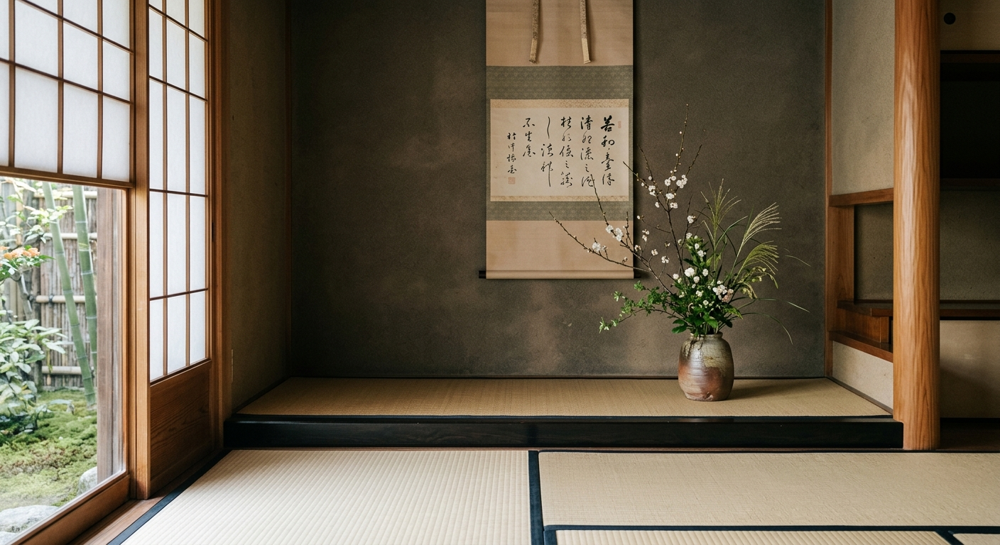
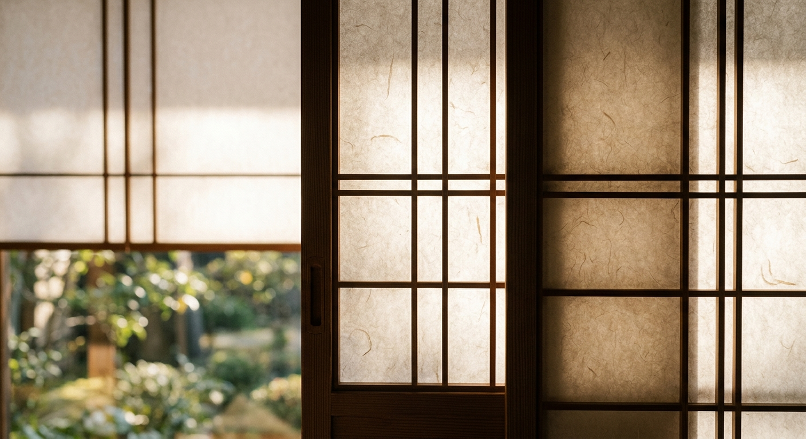
— Guest Rooms
Three rooms. Three characters.
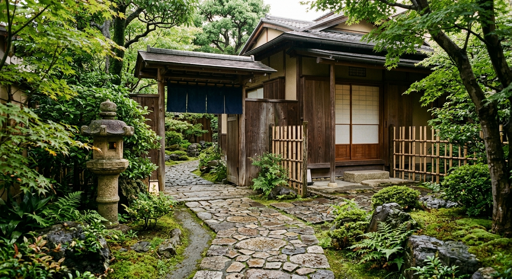
1F · 40㎡ · 1–5 guests
1Fルーム
1F Twin Room — Terrace & Bath
Shigaraki BathBamboo TerraceMini Kitchen
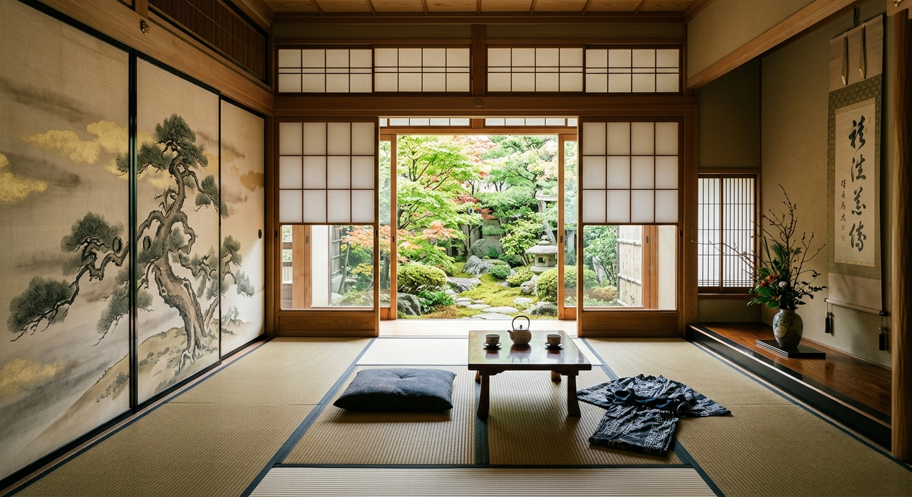
2F West · 25㎡ · 1–4 guests
西部屋
2F West Room
TokonomaTea Room Theme
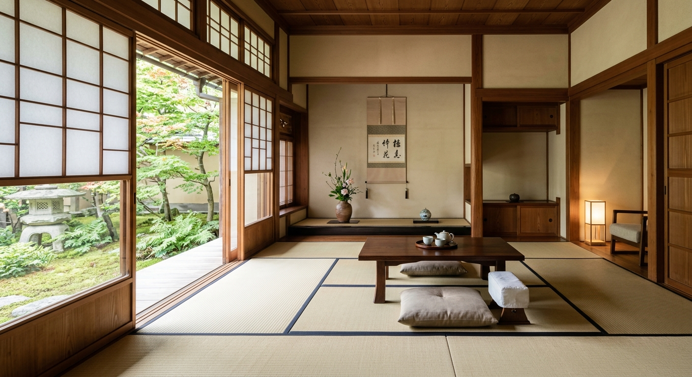
2F East · 21㎡ · 1–4 guests
東部屋
2F East Room
Morning SunEast-facing
— Life at Ayanishiki
Days without urgency.
Breakfast at the market — Kyoto's central produce hall is one minute on foot. An afternoon on the bamboo terrace with your dog. An evening in the Shigaraki bath, steam and silence, nothing scheduled.
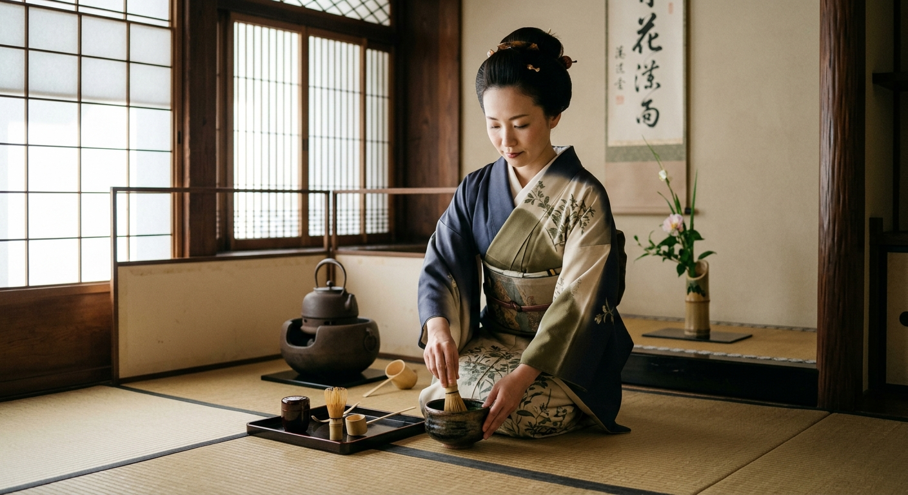
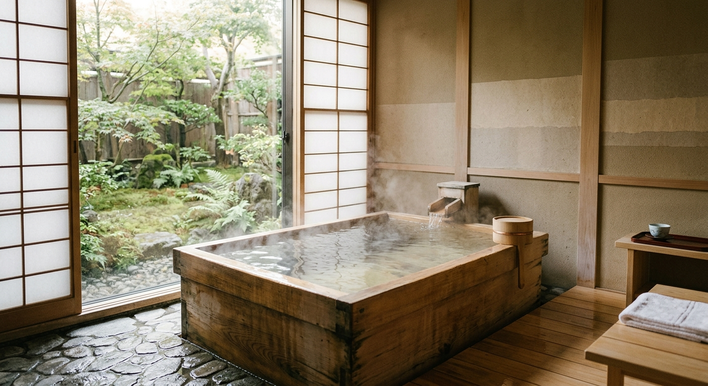
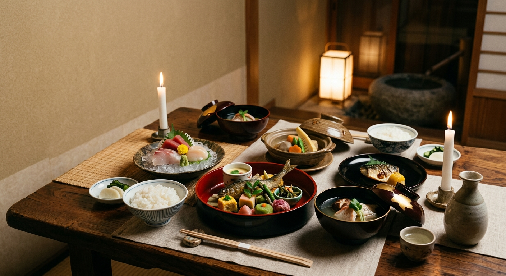
— The Neighbourhood
Shimabara. Still here after 1640.
Japan's oldest designated pleasure quarter. Still legally resident. Walk the Nishi-Ōmon gate. Find the one remaining ochaya. We know which counter to book.
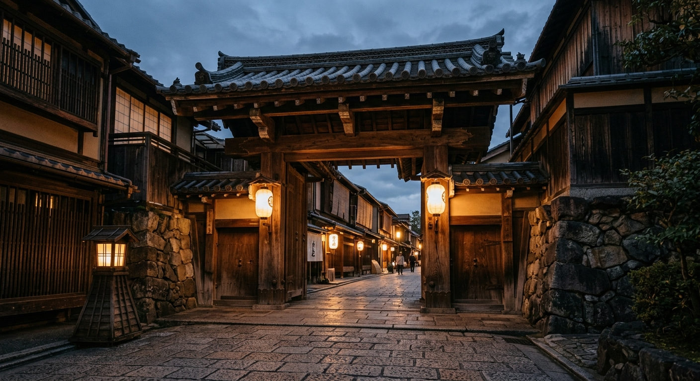
— Journal
Recent stories
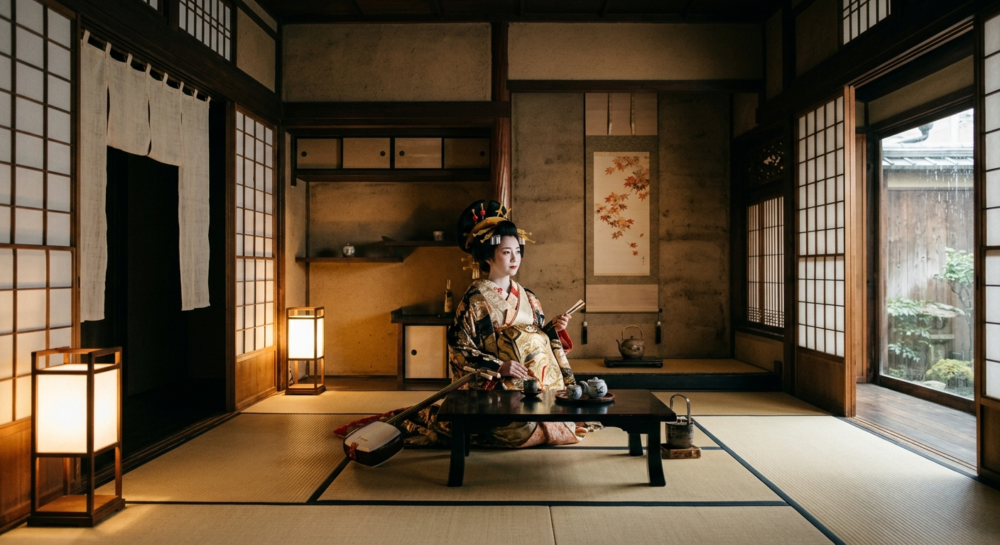
Culture · 文化
The last tayū house and the women who kept its form
March 2025 · 6 min read
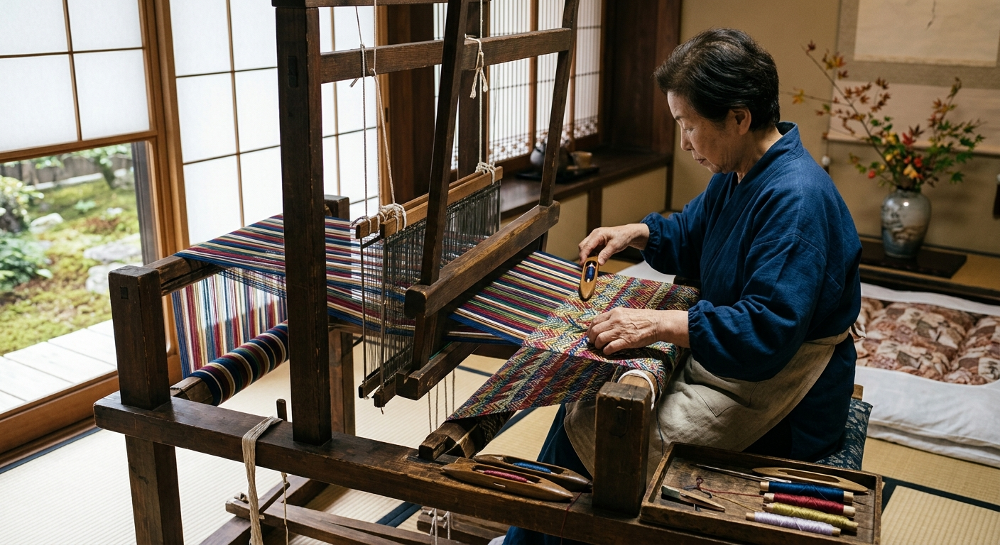
Craft · 工芸
Aya-ori weaving: how a twelve-shaft loom encodes Heian geometry
February 2025 · 4 min read
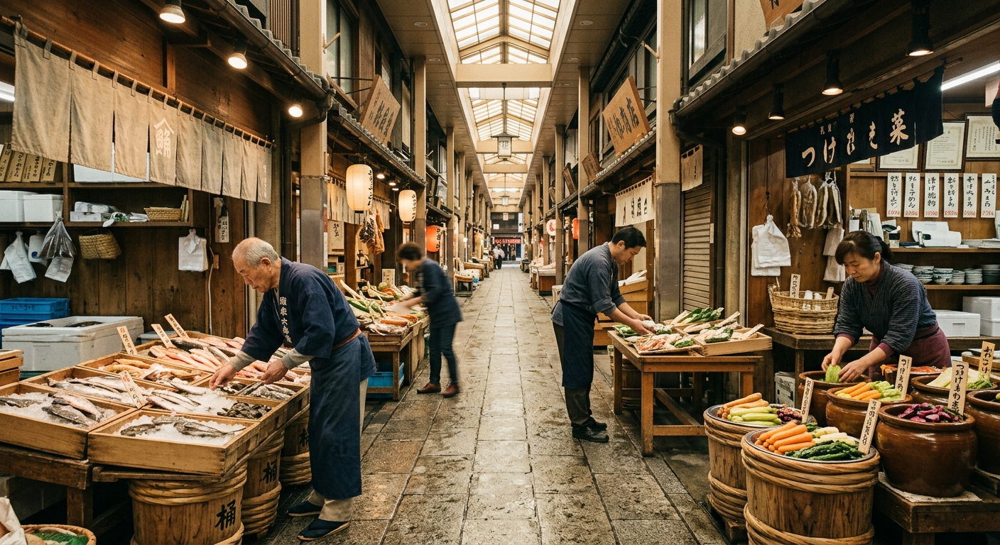
Dining · 食
A morning in Nishiki: what to eat before the market fills
January 2025 · 3 min read
Photo · Interior · Corridor — morning light
Our Philosophy
The concept
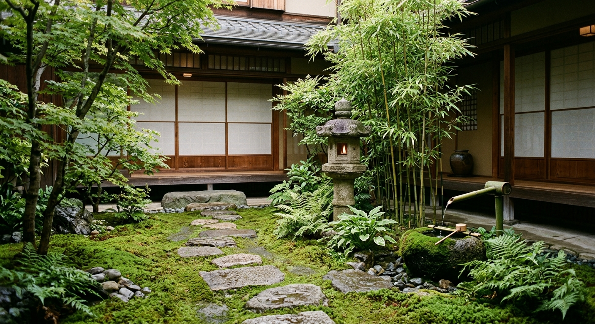
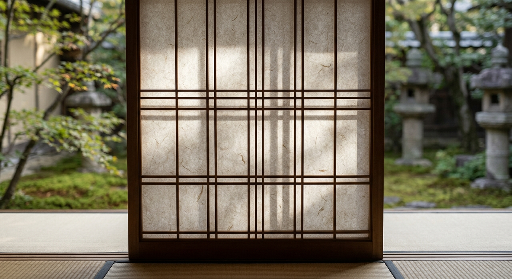
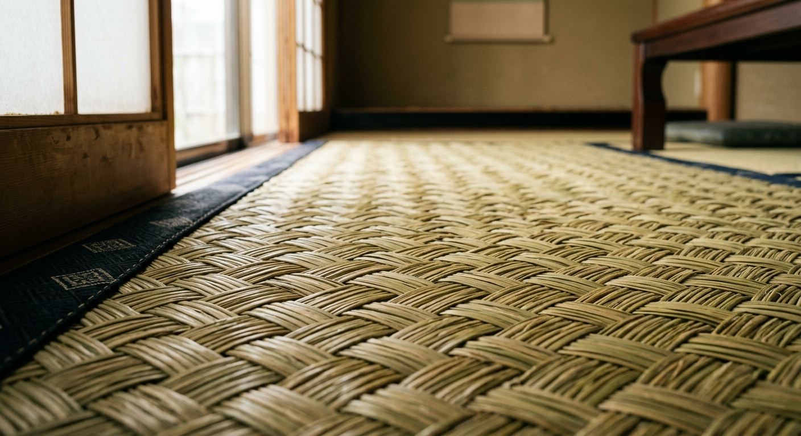
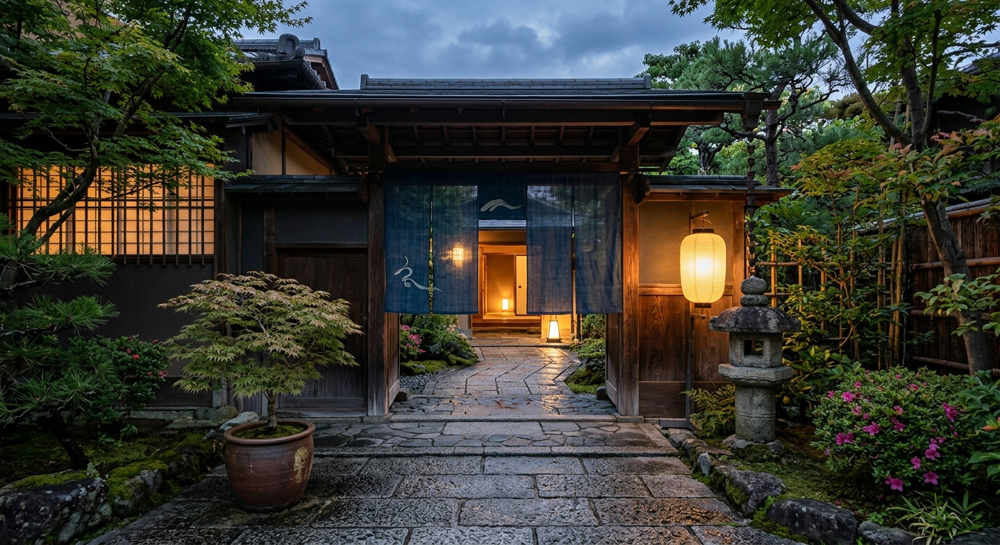
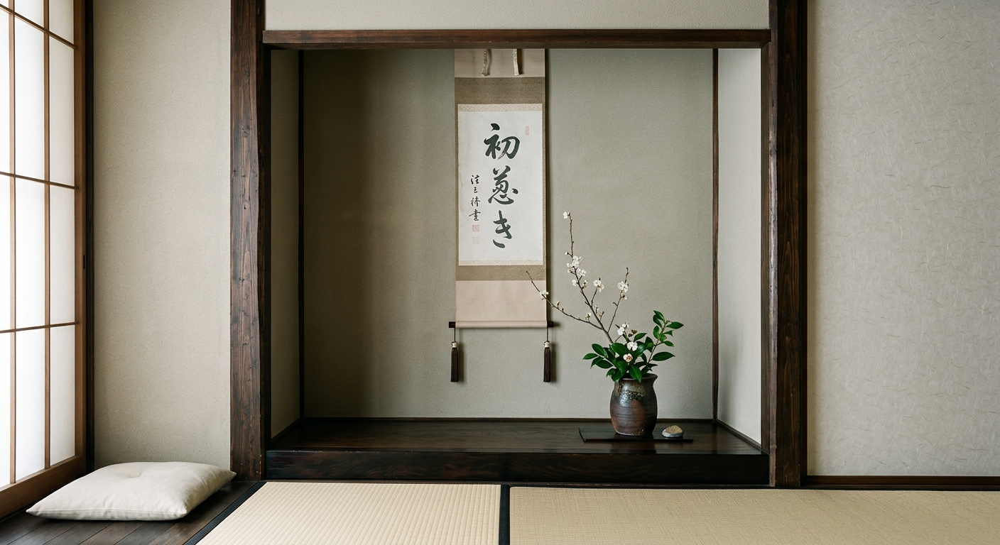
— Origin
Named for the weave.
Aya-ori — the diagonal interlocking weave of Heian court silk — names this building. The structure itself performs the same logic: each room offset from the next, each threshold a deliberate reorientation. You arrive, and the house has already begun its introduction.
The building dates from the early Meiji period. It was a machiya on a street designated — and legally protected — since 1640. When restoration began, the decision was never what to modernise, but what to leave undisturbed.
Established 1640 · Restored 2023 · Shimabara, Kyoto
— Values
What we believe.
Precision over comfort
A room arranged with exactness offers more rest than one arranged for ease. We trust the classical proportions.
The fact, not the adjective
"1640." "Ōmon-dōri." "Three rooms." These carry more weight than any description of luxury.
The unhurried introduction
Every culture of formal hospitality is a culture of introductions. We take the long version. There is time.
— 綾錦の精神
"The address already carries the history. Our work is to be precise enough that guests can feel it — and unhurried enough that they want to."
綾錦について · The Ayanishiki approach
— History
The address in time.
1640
Shimabara designated
The Tokugawa shogunate legally establishes Shimabara as Kyoto's designated quarter. Its boundaries, and the address of this building, are fixed.
1880s
Machiya constructed
The current building is constructed in the Meiji period — a machiya whose proportions faithfully follow the classical Shimabara typology.
2023
Ayanishiki opens
After three years of careful restoration, the house opens as a three-room inn. The Ōmon gate remains. The street outside is still Shimabara.
Photo · 1Fルーム
Guest Rooms · 客室
Three rooms. Three worlds.
Rooms3
Size Range21 — 40㎡
Floor1F & 2F
Max Guests1 – 5
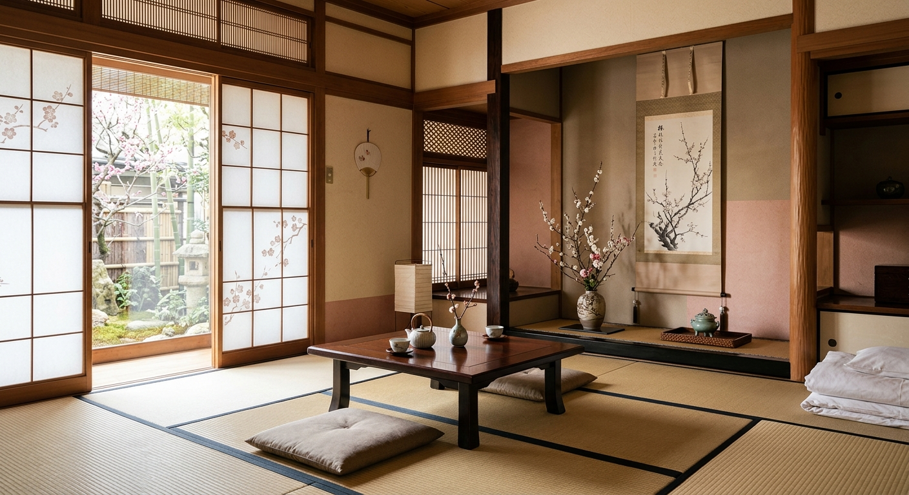
1F · 40㎡ · 1–5 guests
1Fルーム
1F Twin Room — Terrace & Bath
The largest of our three rooms, at 40㎡. A Shigaraki ceramic bath opens to a private bamboo terrace. Mini kitchen for long stays. The only room that accommodates five — and the one that welcomes your dog.
The 1F room is our largest, at 40㎡ on the ground floor. A Shigaraki ceramic bath — hand-fired stoneware from the kilns of Shiga — opens to a private bamboo terrace. The terrace is on one level with the bath, and unobserved. Morning light comes from the courtyard.
A mini kitchen allows long stays to feel settled. The room accommodates up to five — families, small groups, guests who prefer space to hotel proportion. Dogs are welcome, including large breeds. Ajari mochi is left at arrival. The nearest public bath is one minute on foot.
Kyoto is best approached without a schedule. The market opens at 6am. The onsen closes late. Arashiyama is twelve minutes by Randen. Everything nearby is walkable, quiet, and rarely on a tour itinerary.
What the neighbourhood offers
—Kyoto Central Market — 1 min on foot
—Neighbourhood onsen — 1 min on foot
—Arashiyama by Randen — 12 min
—Staff speak Japanese, English, Chinese
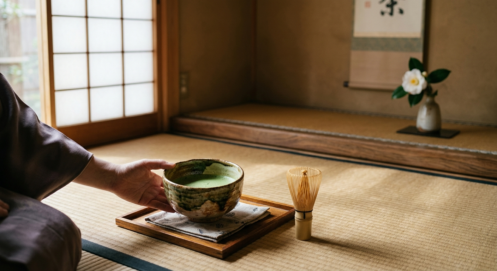
Arts · 芸
茶の湯
Cha-no-yu · Tea Ceremony
Performed by a practitioner of twelve years' training. Sixty minutes in the eight-mat tea room. The form does not change with the season. The water does.
60 min2–4 guestsIncluded
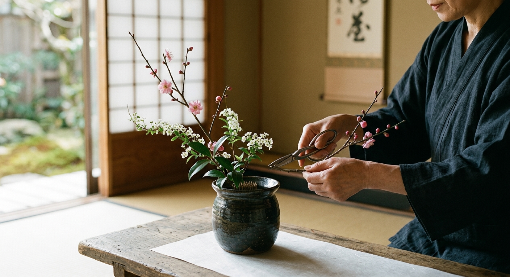
Arts · 芸
生け花
Ikebana · Flower Arrangement
Ikenobō school ikebana, the oldest continuous school of flower arrangement in Japan. Seasonal materials, seasonal forms. What you make is yours to take.
45 min2–4 guestsIncluded
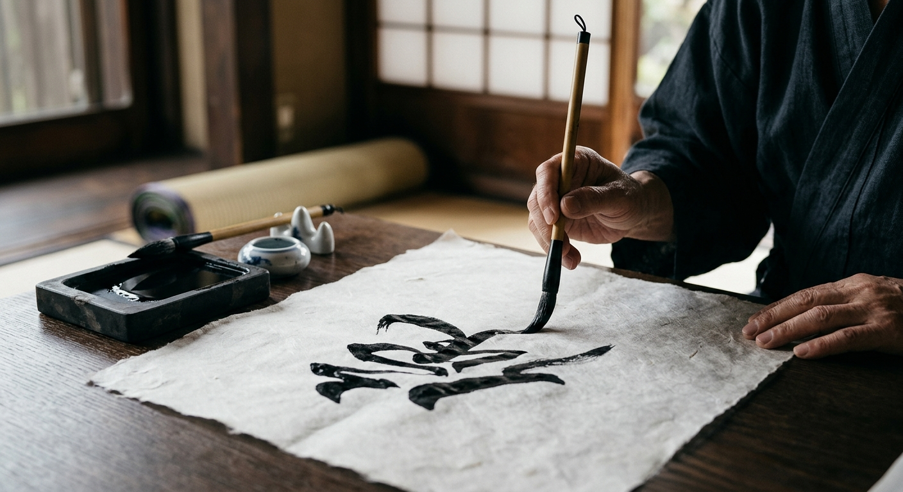
Arts · 芸
書道 — Shodo
Calligraphy with brush and sumi ink. One character, one hour. The brush does not forgive hesitation — but it rewards it differently than you expect.
60 minIncluded
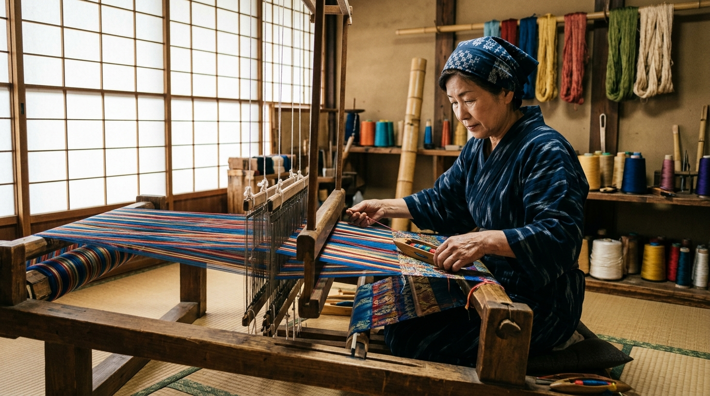
Craft · 工芸
織り — Aya-ori Weaving
A visit to a Nishijin weaver's studio, ten minutes from the house. The loom is a twelve-shaft Jacquard. The weaver will show you the diagonal that names this building.
90 minOff-siteIncluded
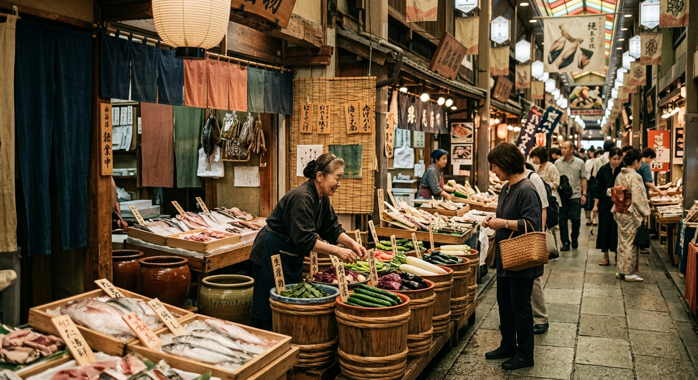
Food · 食
錦市場 — Market Walk
An early morning walk through Nishiki Market with our cook, who has been shopping here for eleven years. The purpose is not to buy — it is to learn what to notice.
75 minMorning onlyIncluded
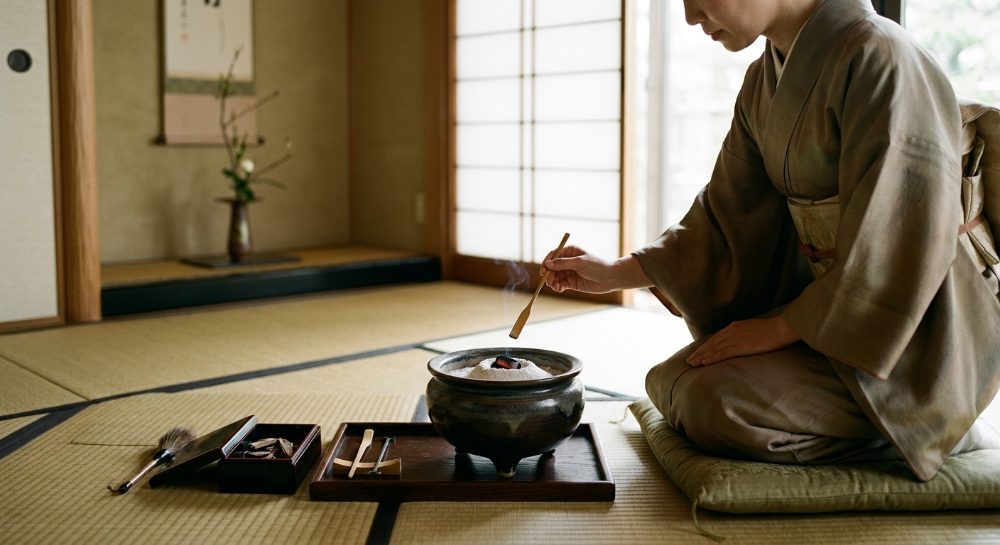
Culture · 文化
香道 — Kodo
The art of listening to incense. Aloeswood and sandalwood, burned on ash and mica. The vocabulary of scent takes years. We teach the first three words.
45 minIncluded
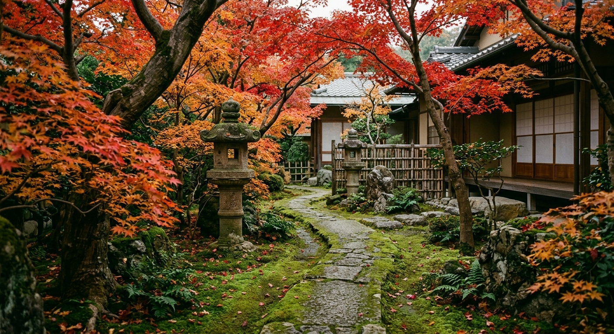
Culture · 文化
庭園 — Garden Walk
A guided walk through Shimabara's remaining private gardens — three properties whose owners do not receive visitors. We are an exception, not a right.
2 hrsOff-siteIncluded
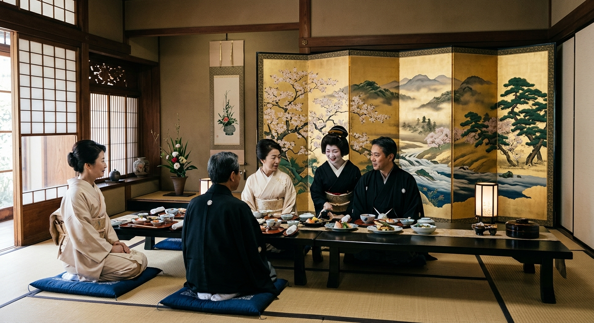
Culture · Special
お座敷 — Evening Ozashiki
A private evening at Sumiya Ochaya — the last intact ozashiki house in Shimabara. Available four evenings per month. Ask us at time of booking.
Performed by a practitioner who has made this movement forty thousand times. You sit in the designated position. The rest is already arranged.
— About This Experience
The form that remains.
The ceremony is conducted in the tea room on the ground floor — eight tatami mats, classical proportions — with a recessed hearth for autumn and winter, a portable brazier for spring and summer. The ceremony changes with the season. The form does not.
Our practitioner, who trained for twelve years in the Urasenke school, will guide you through the necessary movements — but not over-explain them. The ceremony is not a class. It is an encounter.
"The guest must master two things only: how to receive the bowl, and how to return it. Everything else is already decided."
Duration is approximately sixty minutes. There is no additional charge for hotel guests — it is part of your stay.
Three rooms. A Shigaraki ceramic bath in the ground-floor room. A public onsen one minute on foot. Everything the neighbourhood carries — market, temple, canal — within walking distance.
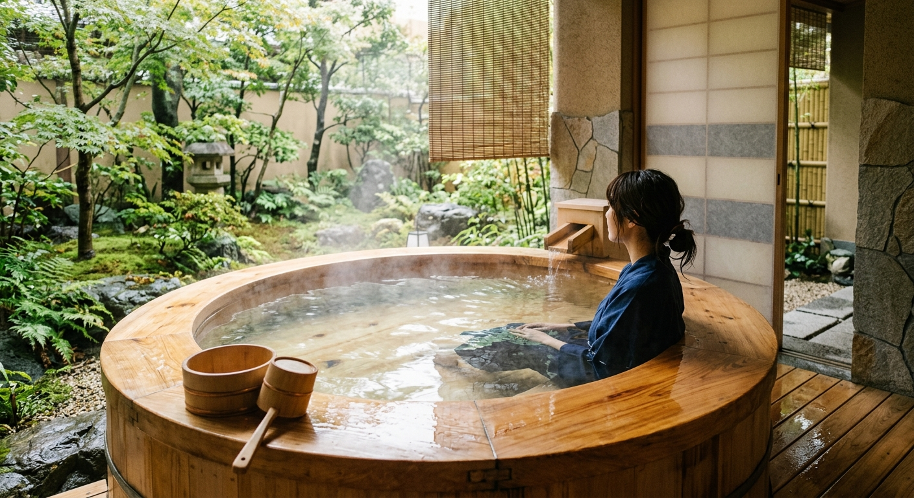
1F · 1Fルーム · In-room bath
信楽焼浴槽
Shigaraki Ceramic Bath
Hand-fired Shigaraki ceramic tub in the ground-floor room, opening to a private bamboo terrace. The oldest ceramic tradition in Japan — from kilns active since the Kamakura period.
1Fルーム onlyBamboo terrace view
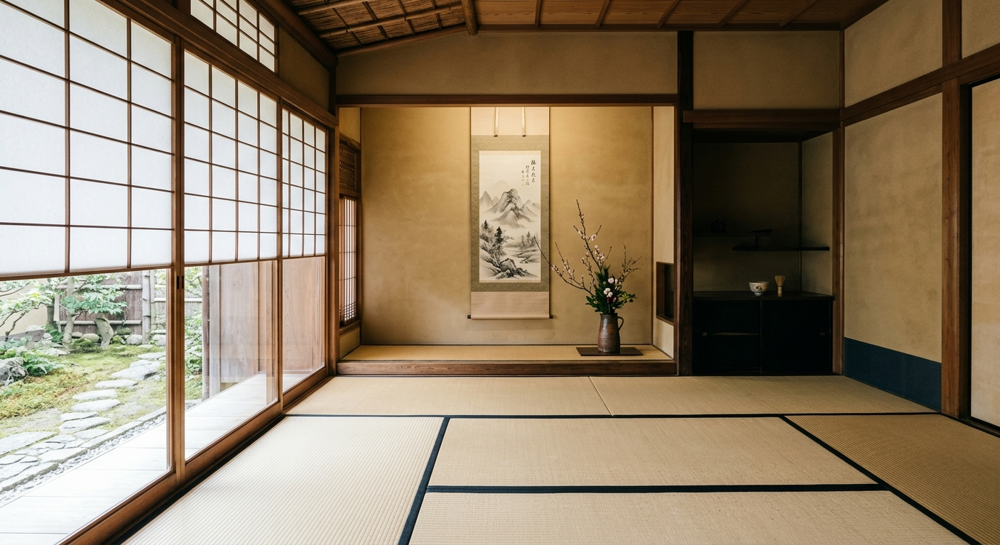
Reception · Available all hours
コーヒー
UCC Coffee Station
UCC coffee machine installed at the front desk. Available any time. Ajari mochi — Kyoto's most celebrated confection — left in your room on arrival.
ComplimentaryAll guests
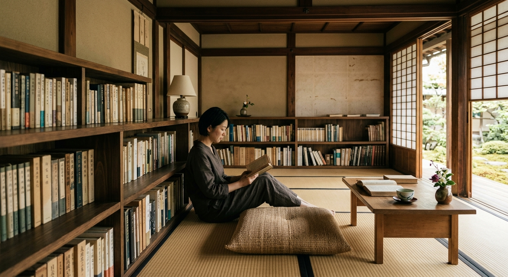
1 min walk · Traditional sento
誠の湯
Neighbourhood Onsen
A traditional neighbourhood bath one minute on foot. We provide a voucher for all guests. The kind of place Kyoto still has — and most visitors never find.
Voucher included1 min walk
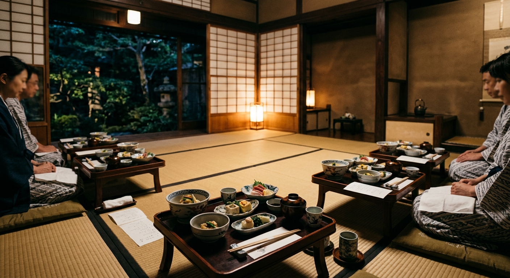
Select plans · Japanese-style
朝食
Japanese Breakfast
Daily-changing Japanese breakfast included with select plans. A washoku-style meal composed around what is in season — a different arrangement each morning.
Select plansChanges daily
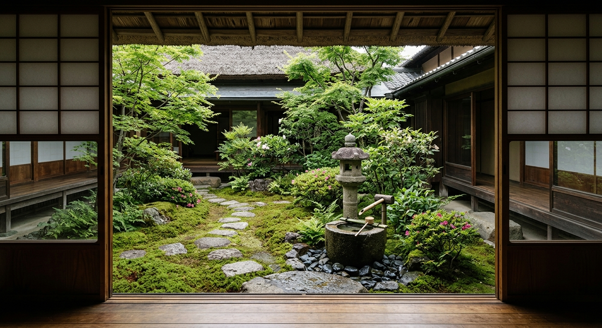
All rooms · Including large breeds
ペット歓迎
Pet Friendly
One of very few properties in Kyoto that welcomes large dogs. Dog amenities provided on request — bowls, beds, leash hooks. The bamboo terrace on the ground floor opens directly outside.
All sizes welcomeDog supplies provided
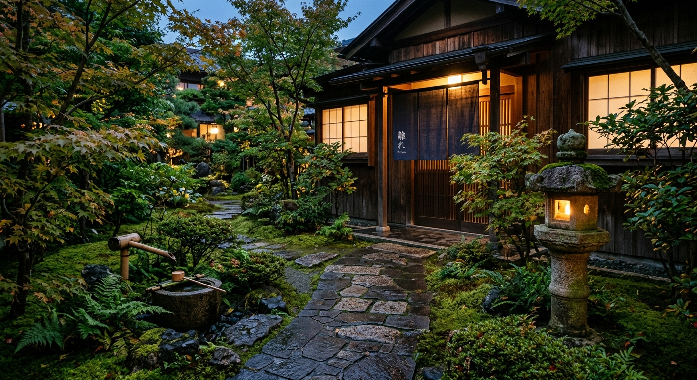
All rooms · Reservation required
ミニキッチン
Mini Kitchen
Available in all three rooms on request. Refrigerator, microwave, IH cooktop. Kyoto Central Market is one minute on foot — the best reason in the city to cook for yourself.
The bath is hand-fired Shigaraki ceramic — from kilns in the hills of Shiga that have been active since the Kamakura period. The 1F room on the ground floor is the only room with this bath, which opens directly to the private bamboo terrace.
Step from the bath to the terrace. The bamboo screens the outside world completely. The market one minute away is already open. There is no rush.
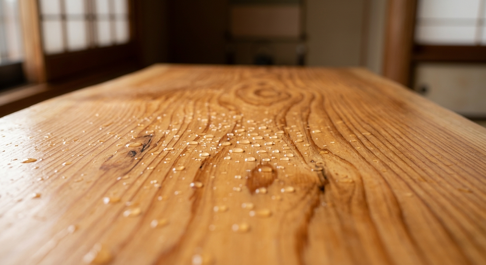
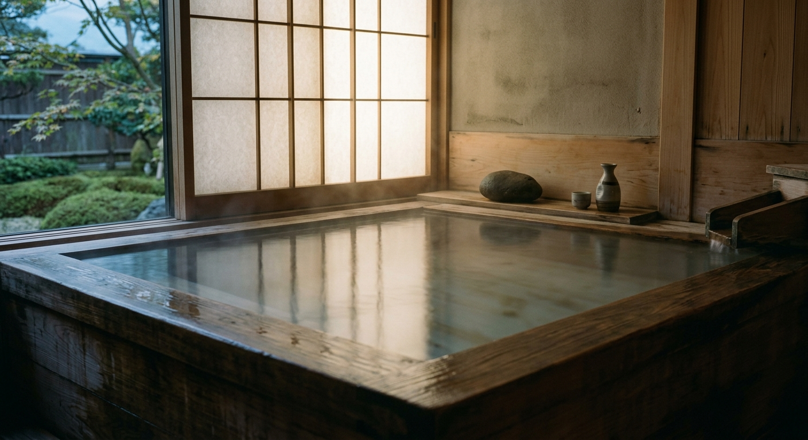
Other Facilities
Coffee
UCC Coffee
Reception · All hours
Public Bath
誠の湯
1 min walk · Voucher included
Breakfast
朝食
Select plans · Daily-changing
Facility Info
Hours1Fルーム · In-room
Location1F · 1Fルーム
AccessGuests only
ReservationRequired
Included with stay
—Shigaraki ceramic tub
—Bamboo terrace access
—Shampoo · Conditioner · Body wash
—Bidet toilet
Photo · Nishi-Ōmon gate · Shimabara
Shimabara — 島原
Still here after 1640.
Map · Shimabara & Surroundings
Ayanishiki
Nearby
History · 歴史
西大門 — Nishi-Ōmon Gate
2 min walk · Built 1640
One of two surviving gates of the original Shimabara quarter.
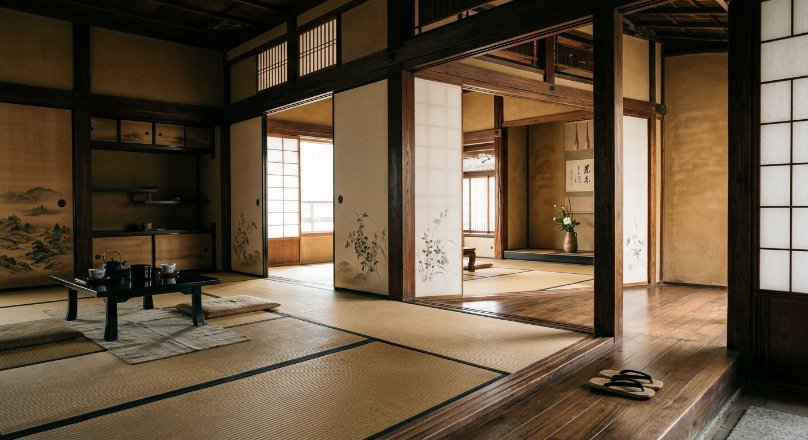
Culture · 文化
角屋 — Sumiya Ochaya
4 min walk · Est. 1641
The last intact ozashiki ochaya in Shimabara. Ask us about the private evening opening.
Dining · 食
錦市場 — Nishiki Market
12 min walk · Open daily 9–18
400 metres of covered market. Go before 10am. Ask for the overnight tsukemono.
— All Nearby
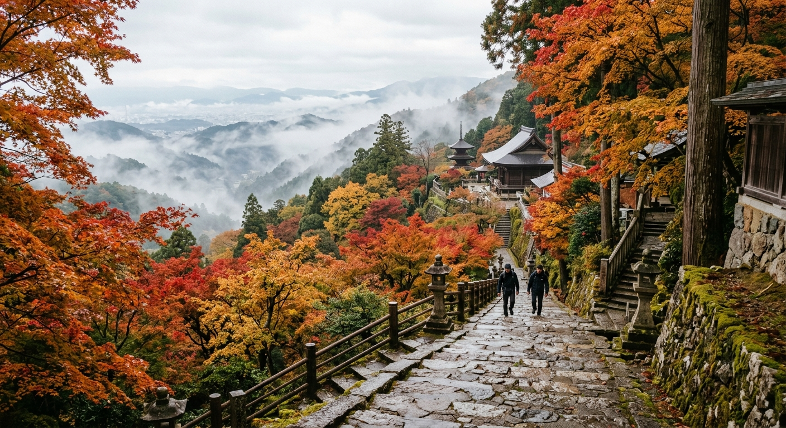
善峯寺
25 min · Temple
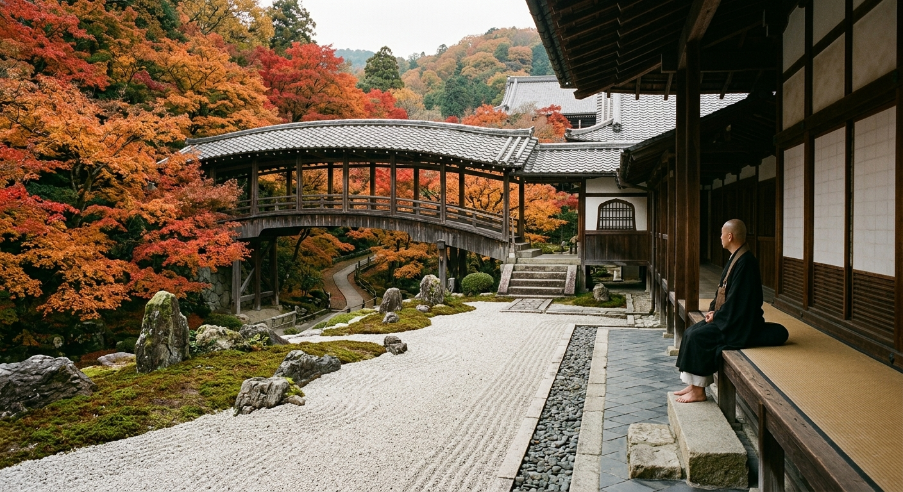
東福寺
18 min · Zen temple
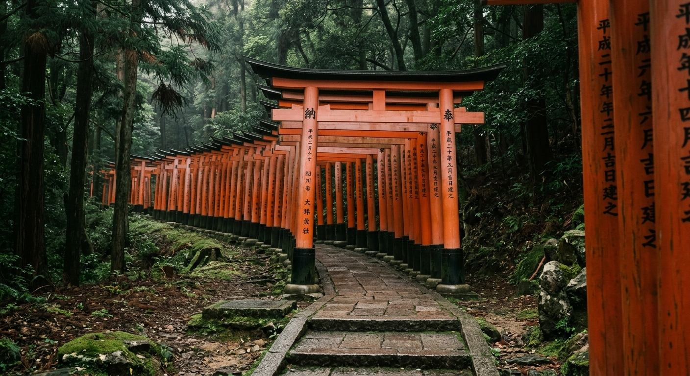
伏見稲荷
22 min · Shrine
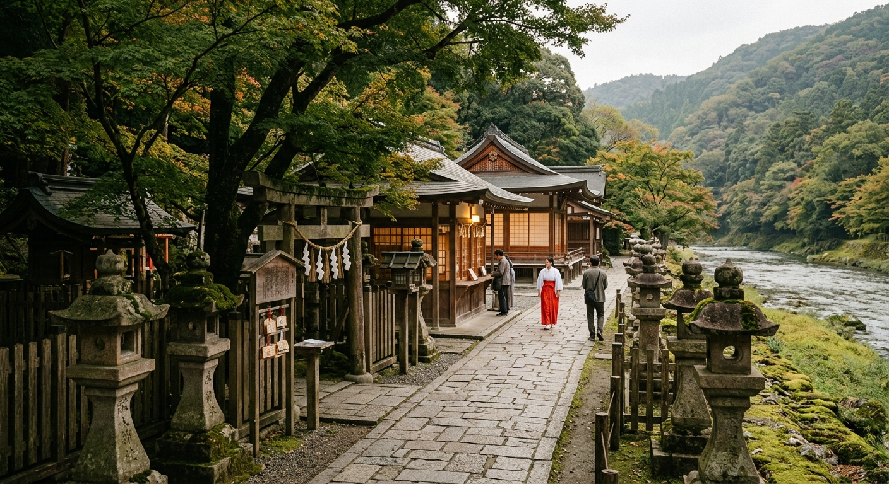
河合神社
15 min · Shrine
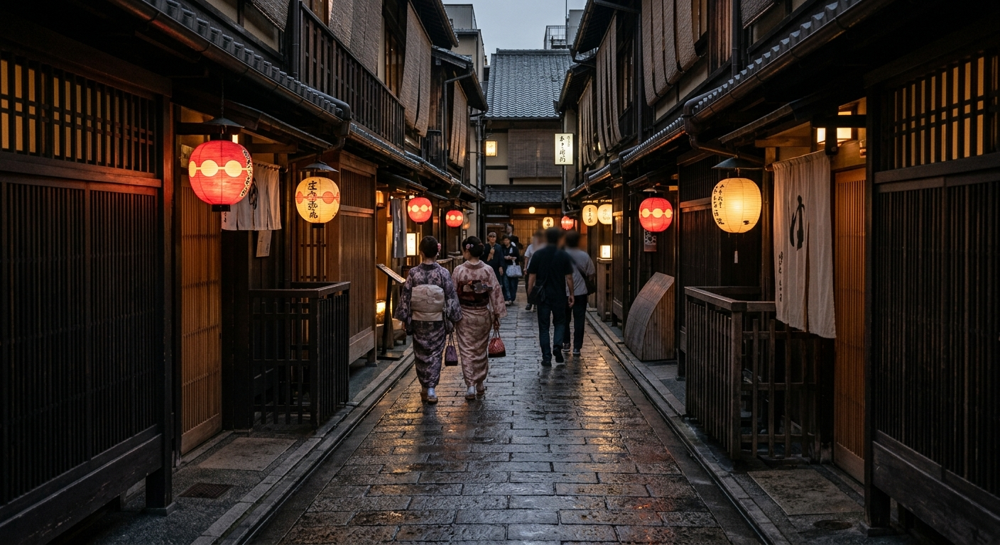
先斗町
10 min · Dining lane
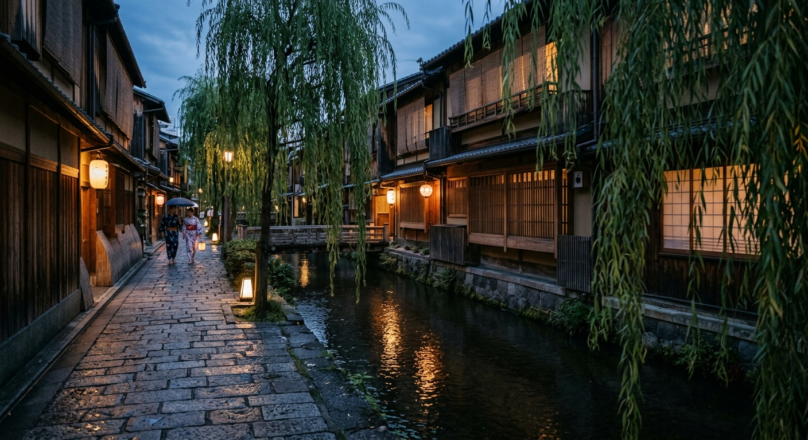
木屋町
12 min · Canal street
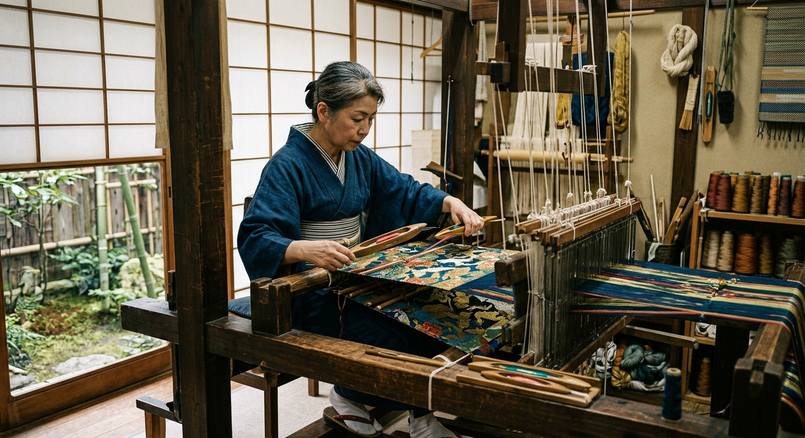
西陣織工房
8 min · Craft
府立植物園
30 min · Garden
— Journal · ジャーナル
Stories from the address.
Essays on craft, history, season, and the particular life of Shimabara.
— Featured
Culture · 文化
The last tayū house and the women who kept its form
An account of the six remaining tayū performers in Shimabara, their training from the age of nine, and the single ochaya that still stages a formal ozashiki.
March 2025·6 min read
Craft · 工芸
Aya-ori weaving: how a twelve-shaft loom encodes Heian geometry
February 2025 · 4 min read
Dining · 食
A morning in Nishiki: what to eat before the market fills
January 2025 · 3 min read
Season · 季節
Winter in Shimabara: what the quarter looks like after the tourists leave
December 2024 · 5 min read
Craft · 工芸
The joiner who fitted our bath has never used a power tool
November 2024 · 7 min read
Culture · 文化
Forty thousand repetitions: a conversation with our tea practitioner
October 2024 · 5 min read
Stay · 滞在
Yoshino hinoki: why the bath timber matters more than the booking
September 2024 · 4 min read
Journal›Culture›The last tayū house and the women who kept its form
Photo · Tayū · Shimabara Ochaya · Evening
Culture · 文化
The last tayū house and the women who kept its form
An account of the six remaining tayū performers in Shimabara, their training from the age of nine, and the single ochaya that still stages a formal ozashiki.
By Ayanishiki Journal·March 18, 2025·6 min read
There are six of them left. The number itself is the first fact worth stating. Not because scarcity is the point, but because knowing six have continued — for how long, through what, out of what refusal or insistence — is more interesting than anything that can be said about their robes.
The training begins at nine. It ends when the practitioner decides it has ended, which is almost never. The tayū — a title, not a rank — learns seventeen arts. Dance and calligraphy are two. The others are less easily named in English. One of them is called the art of the introduction.
"Every culture of formal hospitality is a culture of introductions. The tayū learned this long before the word 'hospitality' existed in Kyoto dialect."
We met three of them in February, in a room that is also a record. The tatami mats are original — pre-Meiji, by the estimation of the shrine carpenter who replaced the skirting two years ago. The room is not shown to visitors. We were guests, not visitors, which requires a distinction we could not have made ourselves.
The cha-no-ma at Sumiya Ochaya, Shimabara. The fusuma were repapered in 2021 — the same pattern, the same supplier, the same person.
The Ōmon-dōri question
The question we had come to ask — whether the practices of the quarter could continue without the structure of the quarter — was not a question that could be answered directly. We were offered tea instead. This was itself a kind of answer.
What the quarter preserves is not the performance. It is the context that makes the performance legible. The gate is not a monument to what has passed. It is the boundary that makes the inside different from the outside. As long as the gate stands, Ōmon-dōri is not simply a street in Shimogyo Ward.
Kanzashi hairpin, cypress and lacquer, ca. 1920s.The obi fold is trained over three years. It is not visible from the front.
We left before the ceremony was complete. This is the correct behaviour. The tayū does not see you out. The gate does. You step through it, and Shimogyo Ward resumes. The transition is immediate, and it is still, after 385 years, absolutely precise.
Three rooms on Ōmon-dōri. The gate is two minutes from your room.
— Related Articles
Craft · 工芸
Aya-ori weaving: how a twelve-shaft loom encodes Heian geometry
February 2025 · 4 min read
Culture · 文化
Forty thousand repetitions: a conversation with our tea practitioner
October 2024 · 5 min read
Season · 季節
Winter in Shimabara: what the quarter looks like after the tourists leave
December 2024 · 5 min read
— FAQ · よくある質問
Questions, answered plainly.
No ambiguity about what the stay includes. Ask anything that remains unclear.
Stay · 滞在
Plans vary — some include Japanese breakfast, others are room-only. All rooms include Ajari mochi on arrival, UCC coffee at the front desk, and a public bath voucher (誠の湯, 1 min on foot). Please check individual plan details at booking.
Check-in is from 15:00. Check-out is by 11:00. Early check-in and late check-out can sometimes be arranged — contact us directly before your arrival.
We welcome guests of all ages. The house is particularly suited to adults and older children. Please contact us in advance if travelling with young children so we can prepare appropriately.
We have a two-night minimum. We have found that one night is not enough to settle into the house properly.
Rooms · 客室
All three rooms have private bathroom and toilet facilities. The 1F room features a Shigaraki ceramic bath opening to the bamboo terrace.
Yes. The cooling and heating systems are fitted discreetly within the existing architecture. The temperature is managed by the house rather than by individual room controls, within a range we consider appropriate to the season.
Reservations · 予約
Cherry blossom season (late March–early April) and autumn foliage season (mid-November) book out four to six months in advance. For other periods, three to eight weeks is usually sufficient.
Cancellations more than 30 days before arrival incur no charge. Between 14 and 30 days: 30% of the total stay. Within 14 days: 100%. We recommend travel insurance for bookings made far in advance.
Access · アクセス
By JR: take the Sagano Line to Tanbaguchi Station (2 stops from Kyoto, approx. 4 min), then 5 min on foot. Alternatively, JR Umekoji-Kyotonishi Station (1 stop, 2 min) then 10 min walk. We can arrange taxi pickup — ask at booking.
Still have questions?
We prefer a telephone call, but respond to all written enquiries within one business day.
Ayanishiki sits in the Shimabara district of Shimogyo Ward — two JR stops from Kyoto Station, five minutes on foot. Kyoto's oldest licensed quarter, now a quiet residential neighbourhood. The Ōmon gate and central produce market are your two landmarks.
Address
西新屋敷中堂寺町 58-5
Shimogyo-ku, Kyoto 600-8816
〒600-8816 京都市下京区西新屋敷中堂寺町58-5
Look for the noren at the entrance on Nakadouji-cho. Reception is staffed 9:00–17:00. For arrivals outside these hours, call ahead: 075-741-7622. Kyoto Central Market is a one-minute walk — ideal for an early morning visit before breakfast.
Access Routes
Kansai International Airport
~75 min
Haruka limited express to Kyoto Station (75 min), then JR Sagano Line 2 stops to Tanbaguchi, 5-min walk. Or taxi from Kyoto Station (~¥1,200).
Shin-Osaka (Shinkansen)
~30 min
Shinkansen to Kyoto Station (15 min), then JR Sagano Line to Tanbaguchi Station (2 stops, 5 min), then 5-min walk.
JR丹波口駅 Tanbaguchi
5 min walk
2 stops from Kyoto Station on the JR Sagano Line. Our nearest station. Exit the station and walk south for 5 minutes — reception will send directions on booking confirmation.
JR梅小路京都西駅 Umekoji
10 min walk
1 stop from Kyoto Station. Walk east along Shichijo-dori for 10 minutes. Passes the Kyoto Railway Museum (12 min) and Kyoto Aquarium (14 min).
嵐電 Randen (Arashiyama)
12 min
Board at Shijo-Omiya (10 min walk or taxi) for Arashiyama in 12 minutes. The line also serves Ninna-ji, Ryoanji, and Myoshinji — all within 5 stops.